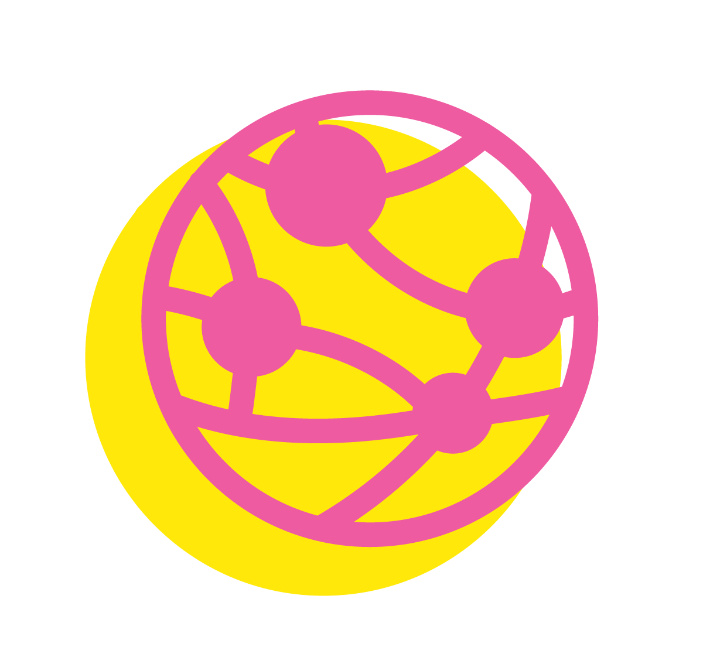

BICYCLE MAYOR AND LEADERS NETWORK
GLOBAL INITIATIVE
The Bicycle Mayor & Leaders Network is a global initiative to accelerate the progress ofcycling in cities by highlighting and supporting the role of civil society in enacting lasting, community driven change.
Bicycle Mayors are the human face and voice of cycling advocacy in a city. We connect these change-makers across a global network to create greater visibility and facilitate the sharing of knowledge, ideas, challenges, and solutions to create a truly radical shift.
Bicycle Mayors in India form the largest regional network across the international program. The vision of BYCS India Foundation is to ensure the network is leveraged and coordinated to provide effective outcomes towards the 50 by 30 goal, 50% of city trips by bicycle by 2030. To maximise impact, we capacitate, aggregate and communicate the efforts being conducted across Indian cities.
Bicycle Mayors are the human face and voice of cycling advocacy in a city. We connect these change-makers across a global network to create greater visibility and facilitate the sharing of knowledge, ideas, challenges, and solutions to create a truly radical shift.
Bicycle Mayors in India form the largest regional network across the international program. The vision of BYCS India Foundation is to ensure the network is leveraged and coordinated to provide effective outcomes towards the 50 by 30 goal, 50% of city trips by bicycle by 2030. To maximise impact, we capacitate, aggregate and communicate the efforts being conducted across Indian cities.
CAPACITATE
We support the creation of measurement tools and evaluation processes through knowledge sharing, data collection, focus groups, workshops, evaluation reports and conferences which help the Bicycle Mayors gain experiences and collaborative opportunities

AGGREGATE
We compile data from members of the network to drive strategy and future direction and analyze the impact of the work being carried out.
COMMUNICATE
Communicating the achievements and activities is an integral part of our work. By amplifying local efforts we can build a national narrative of cycling driven change and unite our voices to create lasting changes in our communities.
We envision an extensive and active network of passionate changemakers who, in their own capacity within the Bicycle Mayor Network, activate millions of people in India to get on the bicycle for daily trips. These leaders are the human face and voice of cycling advocacy in their cities, engaging with their communities, initiating new projects, building partnerships, consulting with local and national authorities, lobbying for new laws and infrastructure, and much more.